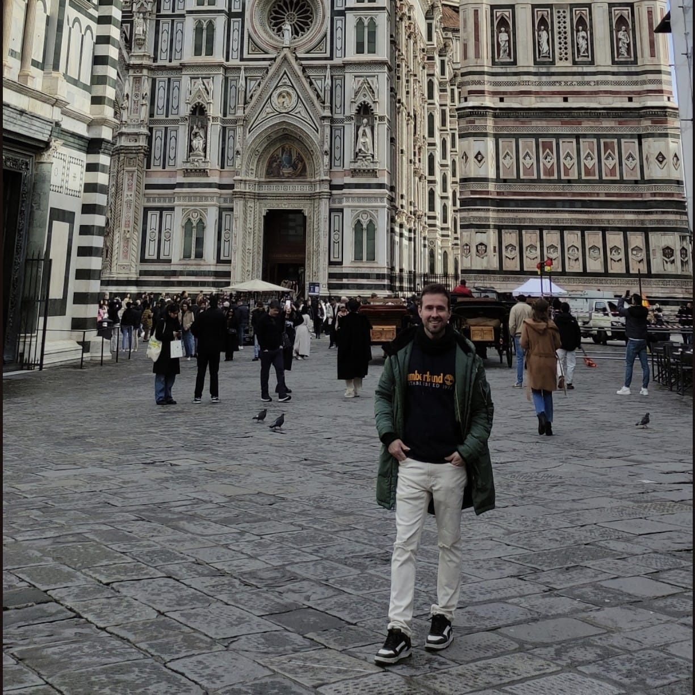
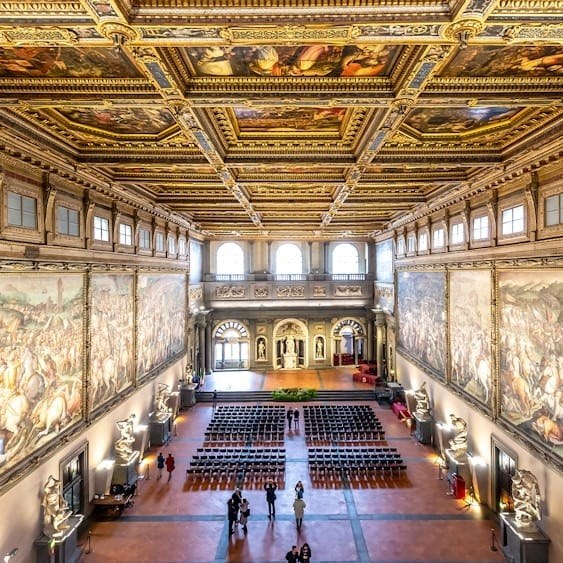
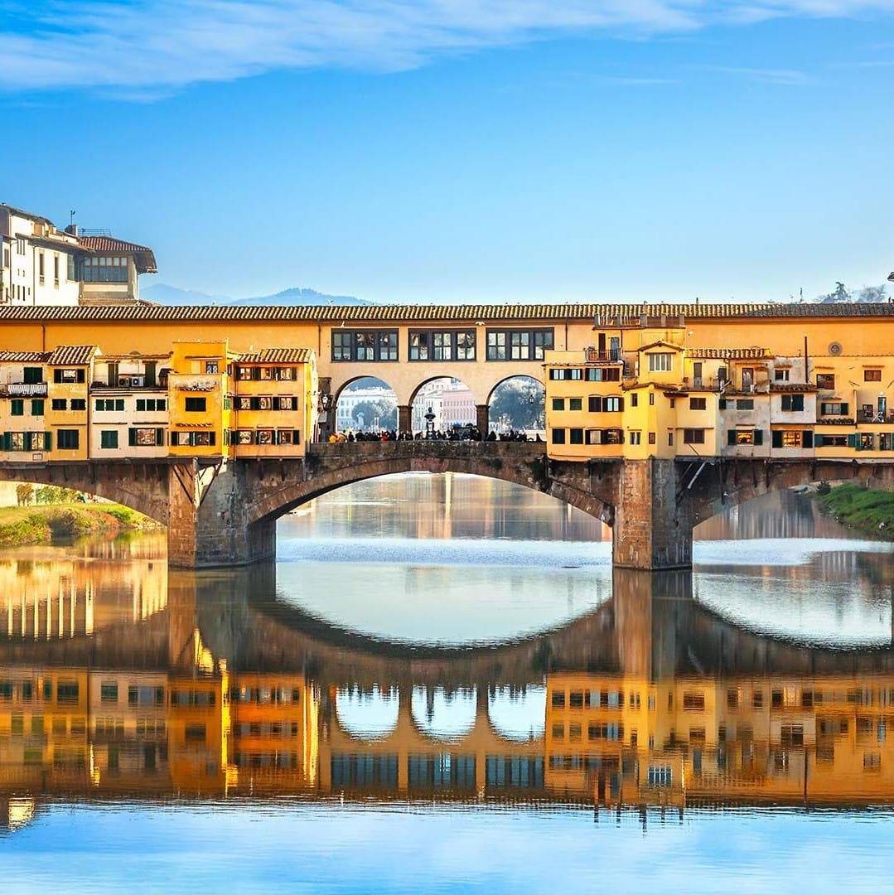
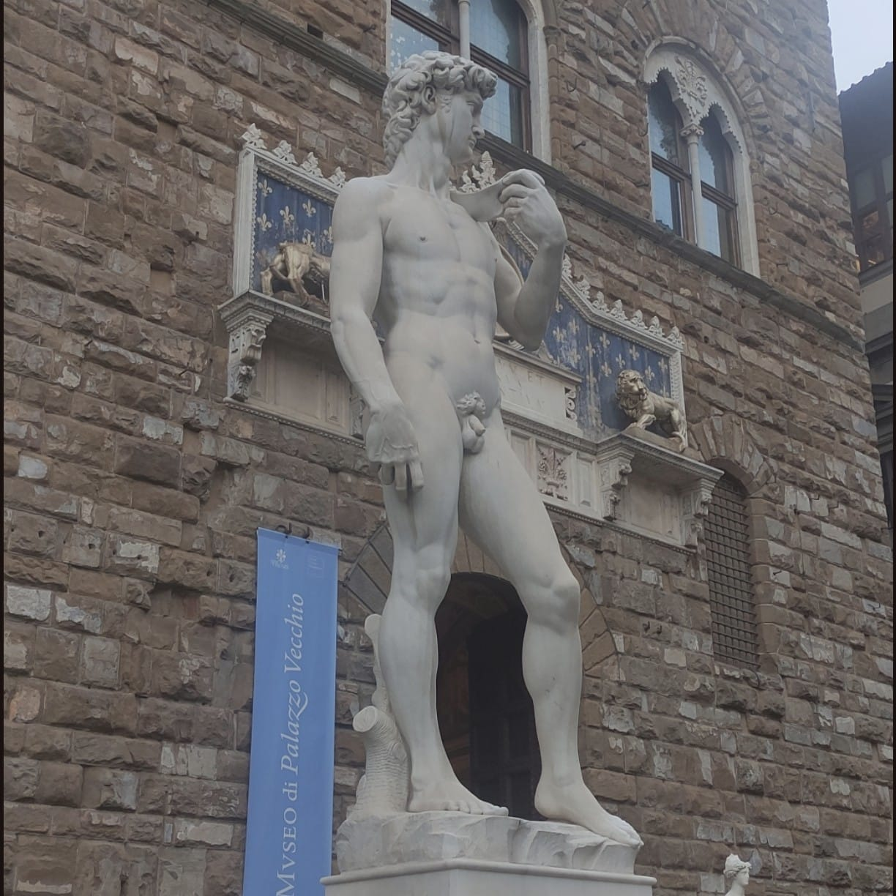
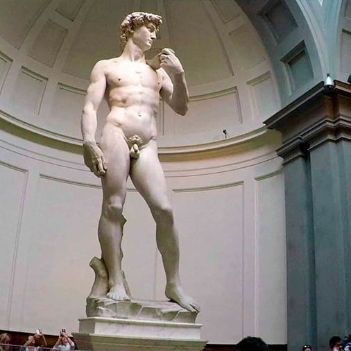
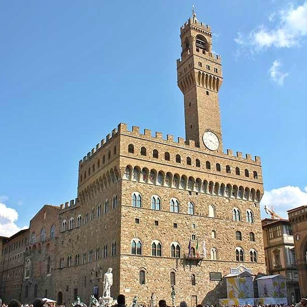
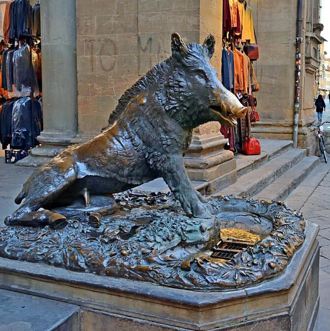
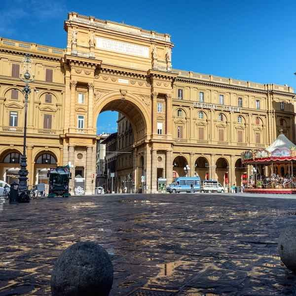
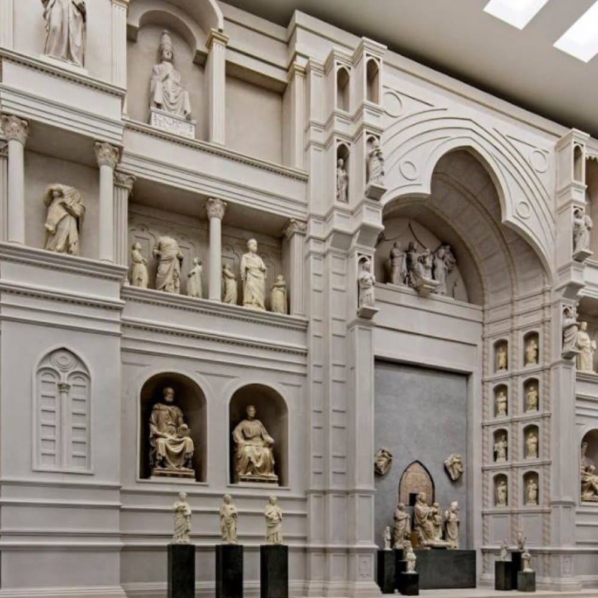
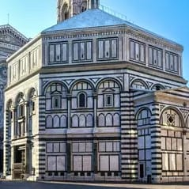

Arte, historia y esencia renacentista en el corazón de Italia
Florencia es una de las ciudades más bellas de Italia y cuna del Renacimiento. Su riqueza artística, arquitectura impresionante y ambiente romántico la convierten en un destino imprescindible para cualquier amante del arte y la historia.
Pasear por Florencia es como viajar en el tiempo. Sus calles están llenas de historia, museos, iglesias y plazas donde se respira arte en cada rincón. La ciudad fue el centro del movimiento renacentista, y sus maestros como Leonardo da Vinci, Botticelli y Miguel Ángel dejaron un legado artístico incomparable.
Durante tu escapada a Florencia, descubrirás la magia de caminar por calles medievales, admirar fachadas renacentistas y sumergirte en la riqueza cultural de una ciudad que cambió el curso de la historia del arte mundial.
---Mi recomendación personal es alojarse en el Centro Histórico si es tu primera vez en Florencia. Todo está cerca y puedes ir caminando a los principales monumentos. Si buscas autenticidad y ambiente local, elige Oltrarno (al otro lado del río). Para presupuestos ajustados, Santa Maria Novella o los Viali ofrecen buena relación calidad-precio.
🚶♂️ Florencia se camina: El centro histórico es pequeño y se puede recorrer entero a pie. La mayoría de los monumentos están a menos de 20 minutos caminando. No necesitas metro o autobús si te alojas en el centro.
🚌 Autobuses urbanos: La empresa ATAF gestiona los autobuses. Un billete sencillo cuesta 1,50€ y dura 90 minutos. Si te alojas en los Viali o Fiesole, necesitarás autobús para ir al centro.
🏠 Alternativas: Los apartamentos turísticos (Airbnb) son muy populares en Florencia, especialmente en Oltrarno y San Lorenzo. Suelen ser más económicos que los hoteles y ofrecen más espacio. Muchos están en edificios históricos con techos altos y vigas de madera.
🚫 Zonas a evitar: Evita alojarte cerca de la Estación de Santa Maria Novella inmediata (puede ser insegura por la noche) y en barrios periféricos alejados como Novoli o Rifredi (lejos del centro y sin encanto).
🛵 Alquilar una Vespa: Florencia es famosa por las Vespas. Es una forma divertida de explorar la ciudad, pero ten cuidado con las zonas de tráfico limitado (ZTL) donde no puedes circular. La Toscana en Vespa es una experiencia inolvidable.

La Catedral de Santa María del Fiore, conocida como el Duomo, es uno de los iconos más reconocibles de Florencia. Su cúpula de terracota roja diseñada por Filippo Brunelleschi es una obra maestra de la arquitectura renacentista y domina el skyline de la ciudad. El David y otros tesoros artísticos se encuentran en los museos asociados a la catedral.

La Galería Uffizi es uno de los museos más importantes del mundo, albergando una colección extraordinaria de arte renacentista. Sus muros están llenos de obras maestras de Leonardo da Vinci, Sandro Botticelli, Michelangelo, Raphael y muchos otros artistas del Renacimiento italiano. Aquí se encuentran obras tan famosas como "El nacimiento de Venus" y "Primavera" de Botticelli, que son iconos del Renacimiento.

El Ponte Vecchio es el puente más antiguo y famoso de Florencia, construido en el siglo XIV. Lo que lo hace especial es que está cubierto de tiendas de joyería y platería que se remontan a siglos atrás y que muchos jóvenes enamorados visitan para dejar sus candados de amor en la barandilla. El puente ofrece vistas espectaculares del río Arno y es especialmente bonito al atardecer.
Pasear por el Ponte Vecchio es una experiencia inolvidable. El ambiente, la historia y las tiendas que bordean el paso crean una atmósfera única que has de vivir durante tu visita a Florencia.

La Piazza della Signoria es la plaza más importante de Florencia, ubicada en el corazón del centro histórico. Esta plaza es el corazón político e histórico de la ciudad, rodeada de importantes edificios como el Palazzo Vecchio (el ayuntamiento medieval) y llena de esculturas y fuentes renacentistas. En el centro se encuentra una copia del famoso "David" de Michelangelo, uno de los monumentos más iconográficos del mundo.
La plaza es un lugar perfecto para sentarse a disfrutar de la atmósfera florentina, observar los músicos callejeros, admirar la arquitectura y tomar un gelato mientras absorbes la historia que te rodea.

La Galería Accademia es mundialmente famosa por albergar el "David" de Michelangelo, una de las esculturas más importantes de la historia del arte. Esta obra maestra de mármol blanco de más de 5 metros de altura es una pieza imprescindible de ver durante tu visita a Florencia.

El Palazzo Vecchio es el ayuntamiento de Florencia y uno de los edificios más icónicos de la ciudad. Ubicado en la Piazza della Signoria, este palacio medieval es una fortaleza que domina la plaza con su impresionante torre. En su interior alberga galerías y museos donde se pueden admirar obras de arte, frescos y estancias históricas ricamente decoradas.

La Fontana del Porcellino es una pequeña pero adorable fuente ubicada en el Mercado de Paja (Mercato del Porcellino), cerca de la Piazza della Signoria. La fuente representa a un jabalí (porcellino en italiano) y es un lugar muy popular entre los visitantes que desean tocarle el hocico, ya que según la tradición local trae fortuna y asegurar el regreso a Florencia.
Este rincón encantador es perfecto para una parada rápida, y alrededor del mercado encontrarás tiendas de artesanías, souvenirs y puestos callejeros. Es un lugar auténtico donde sentir el pulso local de Florencia.

La Piazza della Repubblica es una de las plazas más grandes y monumental de Florencia, ubicada en pleno centro histórico. Aunque es de construcción más reciente (siglo XIX), la plaza representa un importante punto de encuentro para florentinos y turistas. Está rodeada de cafés elegantes, tiendas de lujo y cómodos bancos donde descansar mientras admiras la arquitectura circundante.
La plaza es especialmente bonita al atardecer, cuando se llena de vida con músicos callejeros, terrazas de cafés llenas y un ambiente cosmopolita. Es un lugar perfecto para observar la vida cotidiana de Florencia y tomar un descanso durante tu exploración de la ciudad.

El Museo dell'Opera del Duomo alberga las obras de arte y los tesoros que originalmente decoraban la Catedral, el Campanario y el Baptisterio. Este museo es una joya escondida que muchos visitantes pasan por alto, pero que contiene obras maestras de extraordinario valor. Aquí encontrarás esculturas de Donatello, Ghirlandaio y otras obras maestras del Renacimiento.

El Baptisterio de San Juan es uno de los edificios más antiguos de Florencia, construido entre los siglos XI y XII. Su exterior está completamente cubierto con mármol blanco y verde oscuro que crea un patrón geométrico hermoso y reconocible. El interior alberga mosaicos deslumbrantes que datan del Duecento y Trecento, representando escenas del Antiguo Testamento y la vida de María.
El Baptisterio es especialmente famoso por sus tres puertas de bronce perfectamente esculpidas. Las Puertas del Paraíso de Ghiberti, ubicadas en la entrada norte, son consideradas uno de los 10 trabajos más importantes del Renacimiento.
Comprar entradasDebido al gran número de visitantes, se recomienda encarecidamente reservar entradas para la Galería Uffizi y la Galería Accademia. Estas dos galerías concentran las colas más largas de Florencia. Reservar las entradas con tiempo es necesario para que puedas visitar el museo el día que lo has planeado.
Una buena opción es comprar un combo de entradas que incluya varios museos, lo que te permitirá ahorrar dinero y pasar menos tiempo en colas.
{kind=link}
{kind=link}
{kind=link}
{kind=link}
{kind=link}
{kind=link}
{kind=link}
{kind=link}
{kind=link}
{kind=link}
{kind=link}
{kind=link}
{kind=link}
{kind=link}
{kind=link}
{kind=link}
{kind=link}
{kind=link}
{kind=link}
{kind=link}